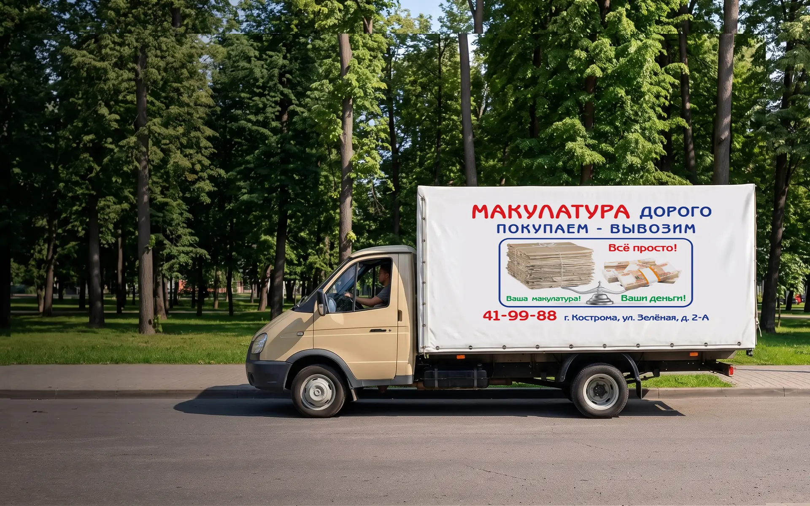
Кострома и Костромская область
Два пункта приёма — в Костроме и Шарье, и своя машина с весами для вывоза
офисная документация, белые писчие листы; серая и цветная бумага не допускается
10 ₽/кг
архив, книги, журналы, буклеты, листовки, брошюры и глянцевые изделия
5 ₽/кг
сухие коробки и гофрокартон
6 ₽/кг
газеты
5 ₽/кг
пустые смятые банки из-под напитков, не притягиваются магнитом
65 ₽/кг
ПВД, стрейч
10 ₽/кг
бутылки от напитков до 5 л, этикетки и крышки можно не снимать
12 ₽/кг
из-под технических средств: масло, химия, антифриз, моющие средства; из-под кислоты не принимаются
8 ₽/кг
фритюры
5 ₽/кг
фруктовые ящики
2 ₽/кг
деревянные поддоны
70 ₽/шт
Оплата сразу — наличными, на карту или на расчётный счёт
Выберите сырьё и вес — сумма по нашим ценам появится сразу
Расчёт примерный: точную сумму считаем по весам при вас.
от 500 кг приедем и заберём сами
С организациями заключаем договор, жителям платим на месте
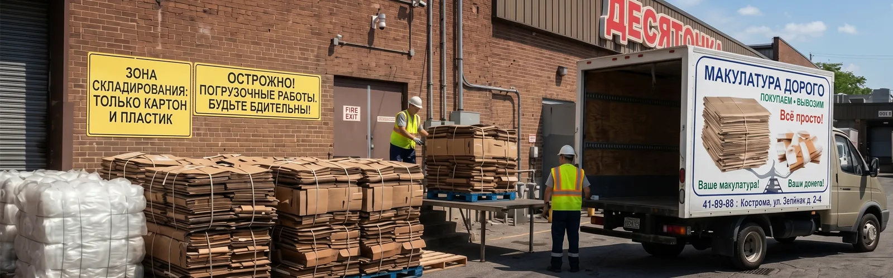
Организациям
забираем картон и плёнку сами от 500 кг, по расписанию в одни и те же дни
приезжаем в постоянные дни, грузим сами, весы есть в каждой машине
любые объёмы, оплата на расчётный счёт, договор
утилизируем архивы и выдаём акт о переработке
договор · вывоз от 500 кг · акты по архивам
Жителям
Пн–Пт 08:00–17:30 · Сб 08:00–14:00 · Вс выходной
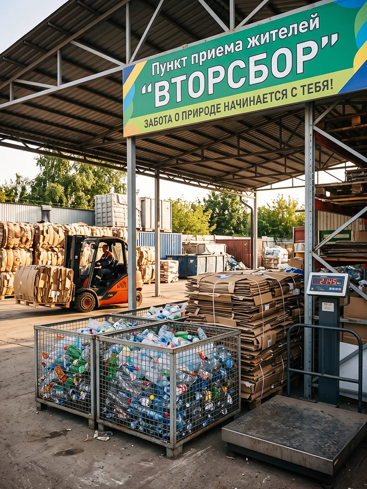
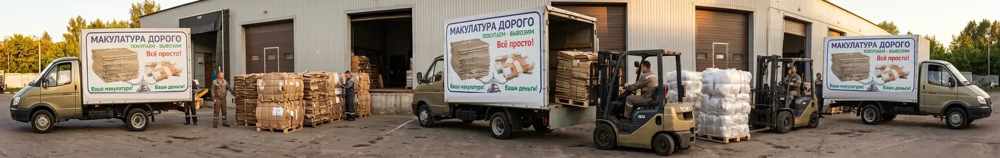
01
какое сырьё, примерный вес и адрес
02
к новым клиентам обычно приезжаем на следующий день, организациям ставим постоянные дни
03
весы в машине, взвешиваем при вас
04
на месте наличными, на карту или на расчётный счёт; можно взвесить на базе и перевести деньги
Вывозим сами от 500 кг; меньше — привезите в пункт приёма
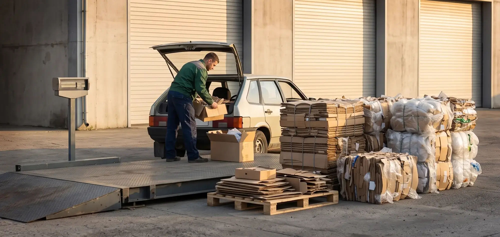
Приезжайте в рабочие часы — записываться не нужно
ул. Зелёная, 2А
Пн–Пт 8:00–17:30 · Сб 8:00–14:00
Вс — выходной
ул. Сенная, 13
Пн–Пт 8:00–17:30 · Сб 8:00–14:00
Вс — выходной
в любой из двух пунктов в рабочие часы
наши грузчики снимут всё с машины
на поверенных весах, платформенных и автомобильных
наличными, на карту или на расчётный счёт
Привозите сырьё сухим и рассортированным по видам — как подготовить и что мы не берём, рассказываем ниже.
Так приёмка пройдёт без отказов, а сырьё попадёт на переработку, а не на полигон
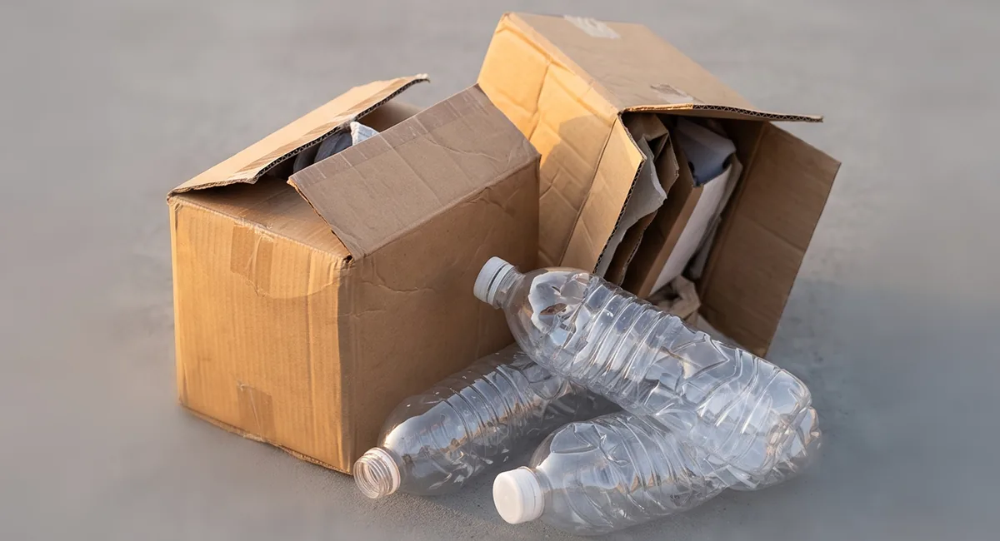
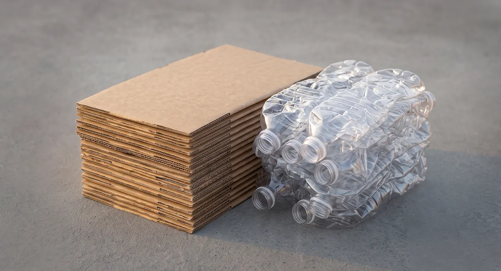
1
без остатков еды, масла и органики
2
коробки разберите в листы, бутылки и банки сомните
3
в картоне нет плёнки и пенопласта, плёнка полностью прозрачная
скрепки и папки с бумаги, этикетки и крышки с бутылок
пакеты-«майки», флаконы от бытовой химии, бутылки от растительного масла и молока, канистры из-под кислоты, ламинированную бумагу, коробки, пропитанные маслом, краской или строительными смесями
Не уверены в бумаге — порвите лист: рвётся — примем, тянется — это ламинат.
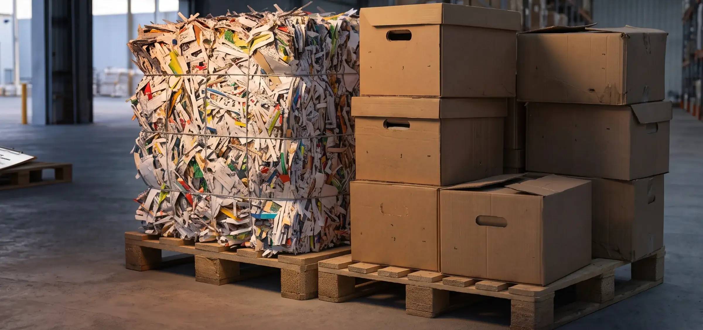
для организаций
Переработаем конфиденциальную документацию и архивы в нечитаемый вид и выдадим акт
Цена — по договорённости: зависит от объёма и вида документов.
01
заключаем с организацией до вывоза
02
забираем архив сами, грузим сами
03
документы превращаются в нечитаемую массу
04
документ о переработке остаётся у вас
Магазины, торговые центры и производства Костромы и области
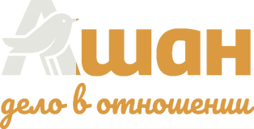
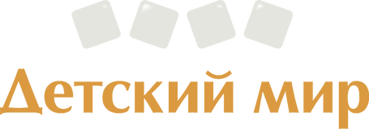
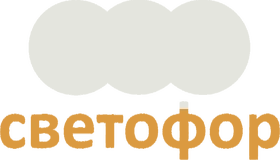
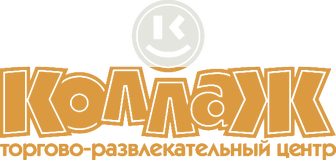
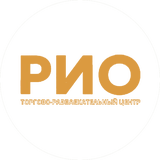
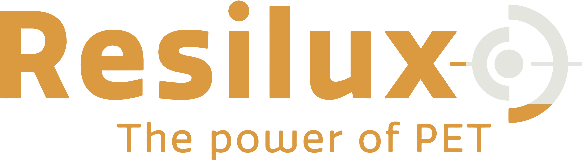
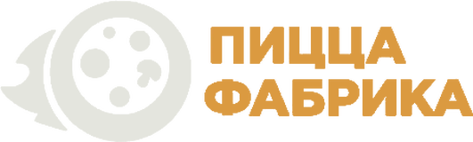
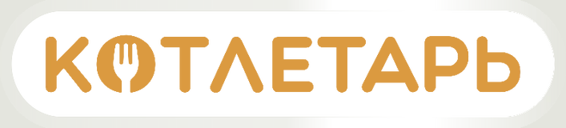
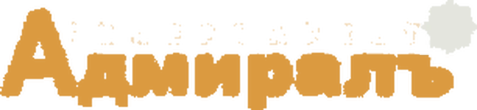
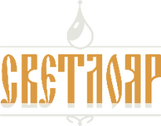
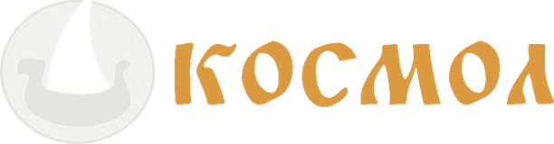
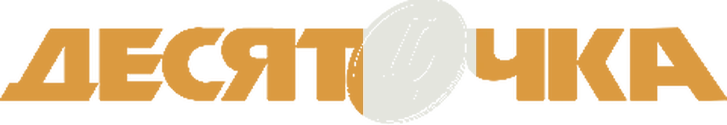
Вывоз
Вывозим сами от 500 кг. Меньше — привезите в пункт приёма, примем любой объём.
К новым клиентам обычно на следующий день, организациям ставим постоянные дни вывоза.
Пункты приёма — в Костроме и Шарье. Вывозим по Костроме, Шарье и районам рядом.
Пункт приёма
Нет. Приезжайте в рабочие часы: Пн–Пт 8:00–17:30, Сб 8:00–14:00.
Нет: скрепки и папки с бумаги, крышки и этикетки с бутылок снимать не нужно.
Деньги и договор
Сразу после взвешивания: наличными, на карту или на расчётный счёт. По договорённости взвешиваем на базе и переводим деньги на счёт.
Калькулятор даёт примерную сумму. Точную считаем по весу на поверенных весах, при вас.
Да. Заключаем договор, а за утилизацию архивов выдаём акт о переработке.
Не нашли свой вопрос?
Напишите в Макс или Телеграм — ответим и подскажем, примем ли ваше сырьё
Два пункта приёма, одни часы работы — пишите в Макс или Телеграм
Пн–Пт 8:00–17:30, Сб 8:00–14:00, воскресенье — выходной — в обоих пунктах
Связаться с нами
Написать в МаксНаписать в Телеграм